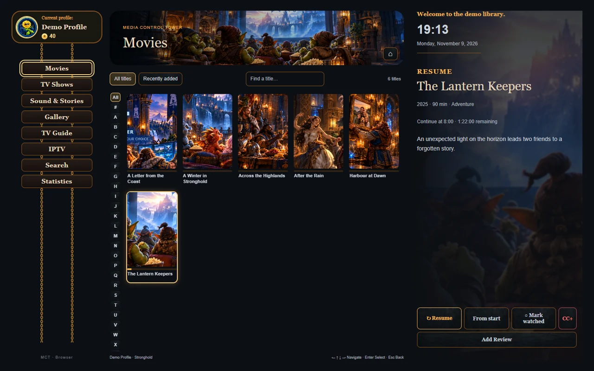

Explore MCT
Your household’s media, together on your own home server.
Movies & Shows
Browse your own movies, series and kids’ collections by poster. Pick up where you left off, select a season or episode, and find subtitles when you need them.

Personal reviews give family members a place to record what they thought of a film, show or episode.
Live TV & Guides
Bring your own IPTV playlist and electronic programme guide (EPG). Save your favourite channels, then use your TV Guide to see what’s on now and what’s coming up from your guide data.

Sound & Stories
Play your albums, find an internet radio station, make a Mix Tape or settle into an audiobook. The audiobook player remembers where you stopped.

Gallery
Choose your photo collections, browse them on a bigger screen or put a spare Android tablet to work as a digital photo frame. Set the timing and transitions, and choose whether to show the clock and captions.

Media Library
Connect the folders on your home server, organise them into collections, and refresh the catalogue when you add new files. Edit details such as titles and artwork, then use Search to find something across your libraries.
Statistics & Companions
See watching time and favourites for each profile. Kids can collect and care for companions, visit the Stable, and spend earned Dexterinoos on snacks from the Treasure Chest.
Companion sets are free to download. Coins and levels are earned in MCT and can’t be bought with real money.
See how Parent Rewards works for homework, chores and cooking.
Devices
Use MCT on Android devices and Amazon Fire TV Sticks. From the server dashboard, see which Firesticks are reachable, check their app versions and manage updates.
Family Profiles
Give each family member their own viewing progress, favourites and companions. Choose which collections each person sees, so kids can start in their own corner of the library.